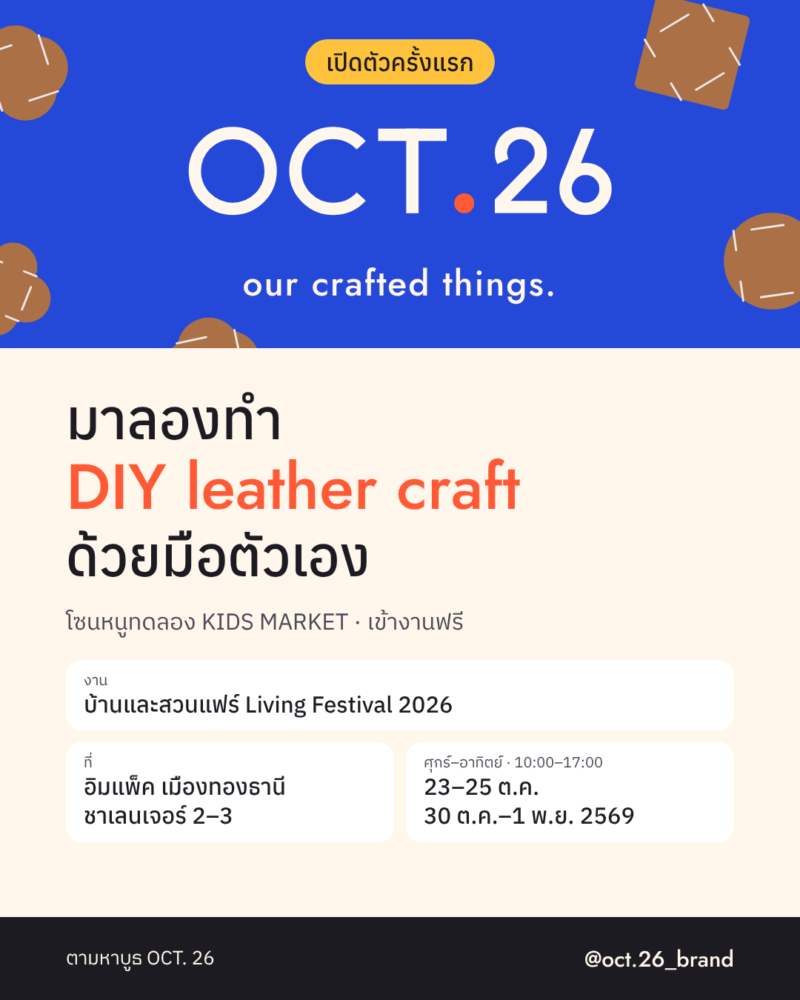

พฤ. 22 ต.ค. · 19:00
โพสต์เชิญมาบูธ แล้วปักหมุดไว้บนสุด
แคปชัน
OCT. 26 เปิดตัวครั้งแรกที่บ้านและสวนแฟร์ Living Festival 2026 ในโซนหนูทดลอง KIDS MARKET ที่บูธเรามี DIY leather craft ให้ลองทำด้วยมือตัวเอง เลือกชิ้นหนังแท้ที่ชอบ เขียนชื่อหรือวาดลายของตัวเอง แล้วรับกลับบ้านได้เลย เด็กทำได้ ผู้ใหญ่ก็สนุก ลูก ๆ อยู่ที่บูธ คอยสอนทีละขั้น ตามหาบูธ OCT. 26 ในโซนหนูทดลอง KIDS MARKET แล้วแวะมาลองกันนะ บ้านและสวนแฟร์ Living Festival 2026 อิมแพ็ค เมืองทองธานี ชาเลนเจอร์ 2–3 23–25 ต.ค. และ 30 ต.ค.–1 พ.ย. 2569 ศุกร์–อาทิตย์ 10:00–17:00 · เข้างานฟรี OCT. 26 · our crafted things. ของที่เราทำกันเอง #OCT26 #ourcraftedthings #หนูทดลองKidsMarket #บ้านและสวนแฟร์ #บ้านและสวนแฟร์2026 #LivingFestival2026 #DIY #leathercraft #งานแฮนด์เมด